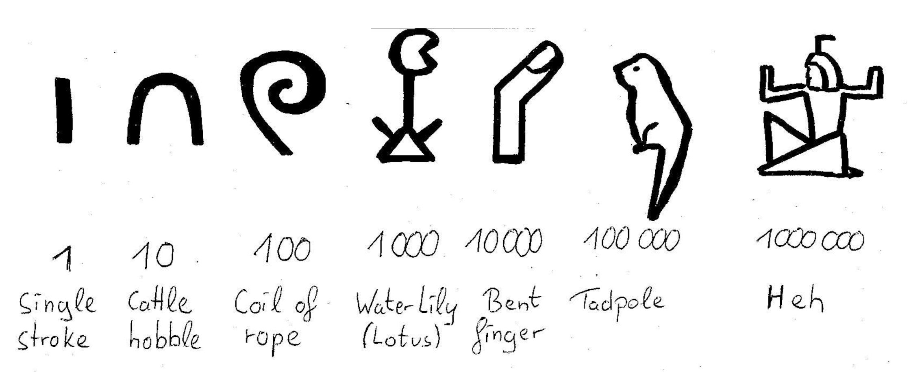

Ancient Egyptian multiplication
The earliest fully developed
numeral system with base ten The Egyptian numerals are based on multiples of ten without the usage of a pace-valued system. Instead multiples of these values were expressed by repeating the symbol as many times as needed.
was used by the ancient Egyptians (circa. 3000 to circa 300 BCE) but unlike the Babylonian numerical system it was not positional. Evidence for Egyptian mathematics is limited to a few papyri, the largest one of them being the
Papyrus Rhind. Left end of the front of the largest fragment of the Rhind Papyrus (now in the British Museum).
Dating from about 1550 BCE, it covers various mathematical topics that we would now refer to as arithmetic, algebra and geometry in 84 problems. The problems (among other things) include fractional expressions, linear equations and the calculation of volumes and areas and stem from practical problems of trade and the market. The papyrus gives us insights on the mathematical methods of the time, one of them being a way of multiplication which requires only the ability to multiply by two and to add. It decomposes the smaller multiplicand into powers of two while creating a table of doublings of the second multiplicand.
Left end of the front of the largest fragment of the Rhind Papyrus (now in the British Museum).
Dating from about 1550 BCE, it covers various mathematical topics that we would now refer to as arithmetic, algebra and geometry in 84 problems. The problems (among other things) include fractional expressions, linear equations and the calculation of volumes and areas and stem from practical problems of trade and the market. The papyrus gives us insights on the mathematical methods of the time, one of them being a way of multiplication which requires only the ability to multiply by two and to add. It decomposes the smaller multiplicand into powers of two while creating a table of doublings of the second multiplicand.